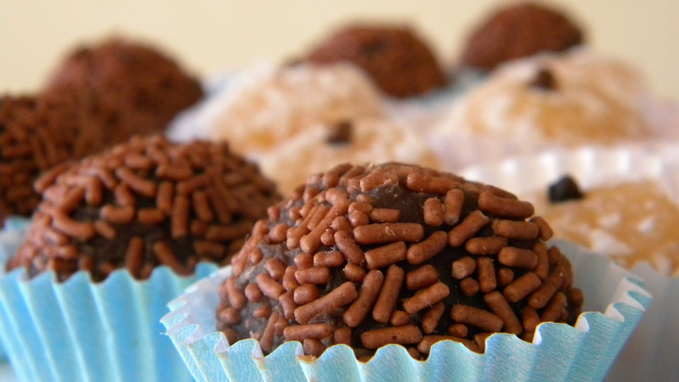
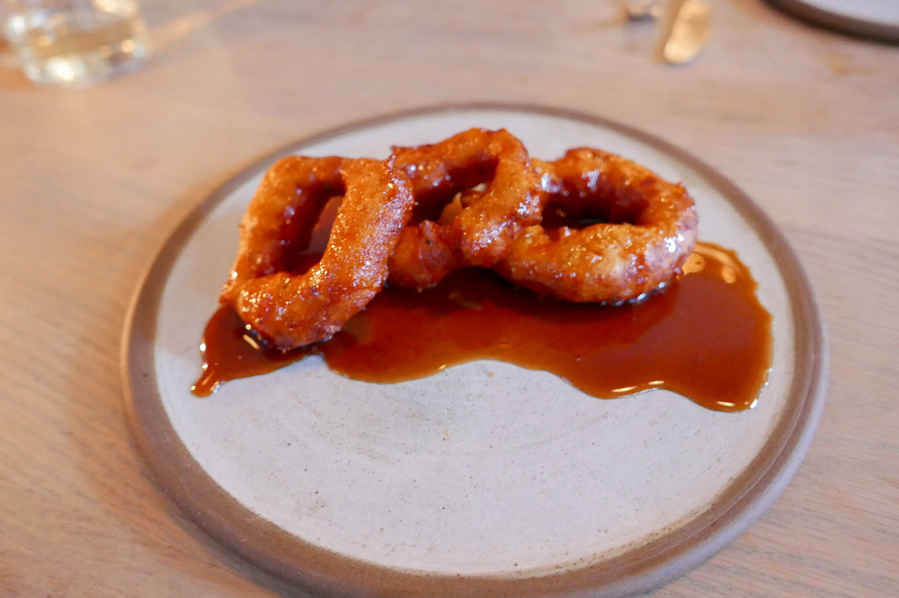
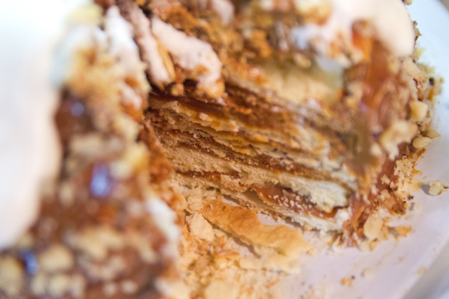

South America
Brazil: Brigadeiros
Similar to a truffle, the dessert is made with powdered chocolate, condensed milk, and butter. It can either be eaten as a cooked mixture or be molded into little individual balls covered in sprinkles.
Recipe
Peru: Picarones
A doughnut made by deep frying a combination of sweet potato, squash, flour, yeast, sugar, and anise.
Recipe
Chile: Torta de Milhojas
A dessert made with stacked layers of puff pastry, filled with dulce de leche; a creamy mix of condensed milk, sugar, and vanilla; or white chocolate.
Recipe
Argentina: Alfajores

The crumbly bite of shortbread gives way to a sweet layer of dulce de leche, a caramel-like candy made by gently cooking sweetened milk until it turns into a rich, mellow treat.